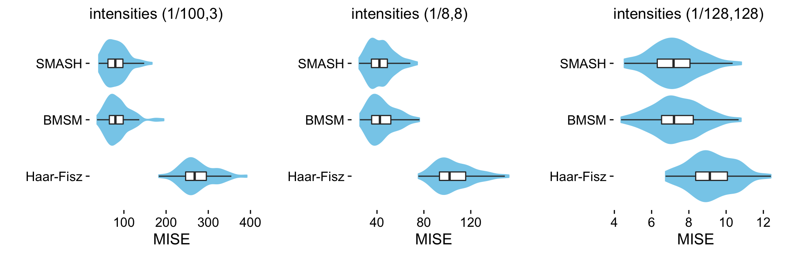
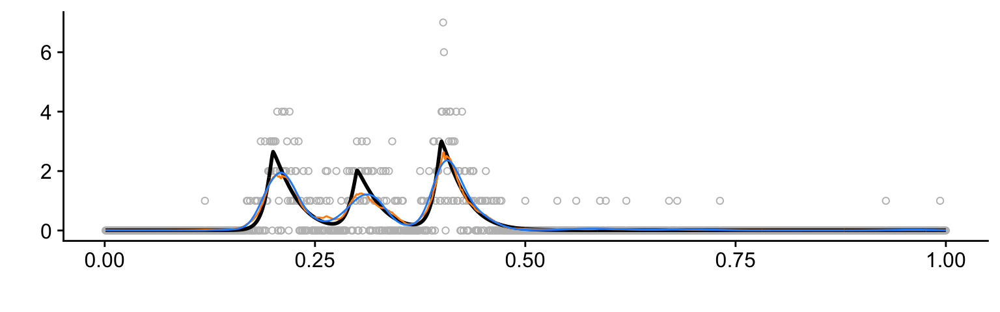
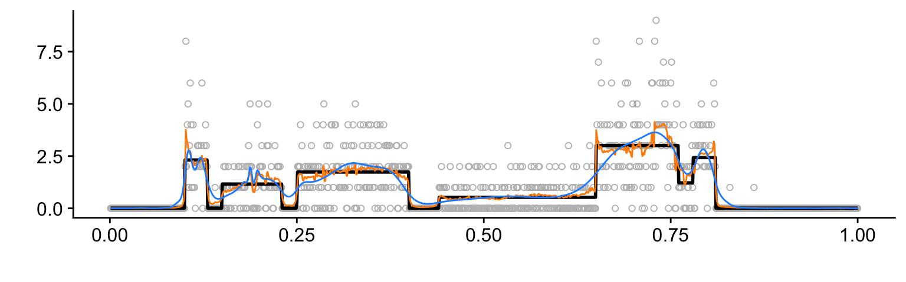

Plots and tables summarizing results of Poisson simulations
Zhengrong Xing, Peter Carbonetto and Matthew Stephens
Last updated: 2018-12-21
workflowr checks: (Click a bullet for more information)-
✔ R Markdown file: up-to-date
Great! Since the R Markdown file has been committed to the Git repository, you know the exact version of the code that produced these results.
-
✔ Environment: empty
Great job! The global environment was empty. Objects defined in the global environment can affect the analysis in your R Markdown file in unknown ways. For reproduciblity it’s best to always run the code in an empty environment.
-
✔ Seed:
set.seed(1)The command
set.seed(1)was run prior to running the code in the R Markdown file. Setting a seed ensures that any results that rely on randomness, e.g. subsampling or permutations, are reproducible. -
✔ Session information: recorded
Great job! Recording the operating system, R version, and package versions is critical for reproducibility.
-
Great! You are using Git for version control. Tracking code development and connecting the code version to the results is critical for reproducibility. The version displayed above was the version of the Git repository at the time these results were generated.✔ Repository version: d351039
Note that you need to be careful to ensure that all relevant files for the analysis have been committed to Git prior to generating the results (you can usewflow_publishorwflow_git_commit). workflowr only checks the R Markdown file, but you know if there are other scripts or data files that it depends on. Below is the status of the Git repository when the results were generated:
Note that any generated files, e.g. HTML, png, CSS, etc., are not included in this status report because it is ok for generated content to have uncommitted changes.Ignored files: Ignored: dsc/code/Wavelab850/MEXSource/CPAnalysis.mexmac Ignored: dsc/code/Wavelab850/MEXSource/DownDyadHi.mexmac Ignored: dsc/code/Wavelab850/MEXSource/DownDyadLo.mexmac Ignored: dsc/code/Wavelab850/MEXSource/FAIPT.mexmac Ignored: dsc/code/Wavelab850/MEXSource/FCPSynthesis.mexmac Ignored: dsc/code/Wavelab850/MEXSource/FMIPT.mexmac Ignored: dsc/code/Wavelab850/MEXSource/FWPSynthesis.mexmac Ignored: dsc/code/Wavelab850/MEXSource/FWT2_PO.mexmac Ignored: dsc/code/Wavelab850/MEXSource/FWT_PBS.mexmac Ignored: dsc/code/Wavelab850/MEXSource/FWT_PO.mexmac Ignored: dsc/code/Wavelab850/MEXSource/FWT_TI.mexmac Ignored: dsc/code/Wavelab850/MEXSource/IAIPT.mexmac Ignored: dsc/code/Wavelab850/MEXSource/IMIPT.mexmac Ignored: dsc/code/Wavelab850/MEXSource/IWT2_PO.mexmac Ignored: dsc/code/Wavelab850/MEXSource/IWT_PBS.mexmac Ignored: dsc/code/Wavelab850/MEXSource/IWT_PO.mexmac Ignored: dsc/code/Wavelab850/MEXSource/IWT_TI.mexmac Ignored: dsc/code/Wavelab850/MEXSource/LMIRefineSeq.mexmac Ignored: dsc/code/Wavelab850/MEXSource/MedRefineSeq.mexmac Ignored: dsc/code/Wavelab850/MEXSource/UpDyadHi.mexmac Ignored: dsc/code/Wavelab850/MEXSource/UpDyadLo.mexmac Ignored: dsc/code/Wavelab850/MEXSource/WPAnalysis.mexmac Ignored: dsc/code/Wavelab850/MEXSource/dct_ii.mexmac Ignored: dsc/code/Wavelab850/MEXSource/dct_iii.mexmac Ignored: dsc/code/Wavelab850/MEXSource/dct_iv.mexmac Ignored: dsc/code/Wavelab850/MEXSource/dst_ii.mexmac Ignored: dsc/code/Wavelab850/MEXSource/dst_iii.mexmac Untracked files: Untracked: analysis/poisson.R Unstaged changes: Modified: analysis/index.Rmd Modified: analysis/poisson_plots.Rmd
Expand here to see past versions:
| File | Version | Author | Date | Message |
|---|---|---|---|---|
| html | bd84eae | Peter Carbonetto | 2018-12-20 | Build site. |
| Rmd | 51620b3 | Peter Carbonetto | 2018-12-20 | wflow_publish(“poisson.Rmd”) |
| html | bda4fbc | Peter Carbonetto | 2018-12-20 | Wrote function create.violin.plots in poisson.Rmd. |
| html | ed961b1 | Peter Carbonetto | 2018-12-20 | Added violin plots for the Spikes and Angles Poisson simulation results. |
| Rmd | 68ce493 | Peter Carbonetto | 2018-12-20 | wflow_publish(“poisson.Rmd”) |
| html | 2acee22 | Peter Carbonetto | 2018-12-20 | Added plots for all test functions. |
| Rmd | 987a861 | Peter Carbonetto | 2018-12-20 | wflow_publish(“poisson.Rmd”) |
| Rmd | b3f5b57 | Peter Carbonetto | 2018-12-20 | wflow_publish(“poisson.Rmd”) |
| Rmd | d36bfca | Peter Carbonetto | 2018-12-20 | Misc. revisions to READMEs and documentation. |
| Rmd | 7aa0b11 | Peter Carbonetto | 2018-12-20 | Working on poisson analysis. |
| Rmd | 3c562ea | Peter Carbonetto | 2018-12-19 | Moved poisson_tables.Rmd to poisson.Rmd. |
| Rmd | 25ff9c3 | Peter Carbonetto | 2018-12-19 | Re-organized some of the files used in the Poisson numerical comparisons. |
Here we create plots and tables to compare SMASH and against other methods for reconstructing a spatially structured signal from Poisson-distributed data. Similar to the Gaussian simulations, we generated data sets using a variety of test functions and intensity ranges. Specifically, we considered 6 test functions, rescaling the test function so that the smallest intensity was x and the largest intensity was y, with (x,y) set to either (1/100, 3), (1/8, 8) or (1/128, 128). For each combination of test function and intensity range, we simulated 100 data sets. In the plots and tables below, We summarize the error (MISE) in the estimates from the 100 data sets in each setting.
The plots below summarizing the results from the “Bursts” simulations were included in the manuscript.
Analysis settings
We will extract the results from these methods:
methods <- c("ash","BMSM","haarfisz_R")Specify the row and column names for the tables:
table.row.names <- c("SMASH","BMSM","Haar-Fisz")
table.col.names <- c("(1/100,3)","(1/8,8)","(1/128,128)")These are settings used in plotting the test functions:
n <- 1024
t <- 1:n/nSet up environment
Add text here.
library(ggplot2)
library(cowplot)
library(xtable)Some of the test functions are defined in signals.R:
source("../code/signals.R")Load results
Load the results of the simulation experiments.
load("../output/pois.RData")Spikes data
This is the function used to simulate the “Spikes” data sets at different ranges of intensities:
mu.s <- spike.f(t)
plot(t,mu.s,xlab = "",ylab = "",type = "l")
Expand here to see past versions of plot-spikes-function-1.png:
| Version | Author | Date |
|---|---|---|
| ed961b1 | Peter Carbonetto | 2018-12-20 |
| 2acee22 | Peter Carbonetto | 2018-12-20 |
This table summarizes the results from the Spikes simulations:
mise.s.table <- cbind(mise.s.1[methods],
mise.s.8[methods],
mise.s.128[methods])
rownames(mise.s.table) <- table.row.names
colnames(mise.s.table) <- table.col.names
print(xtable(mise.s.table,caption = " "),type = "html",
html.table.attributes = "border=0")| (1/100,3) | (1/8,8) | (1/128,128) | |
|---|---|---|---|
| SMASH | 690.01 | 329.26 | 48.87 |
| BMSM | 1007.34 | 397.79 | 41.88 |
| Haar-Fisz | 722.19 | 287.44 | 18.06 |
Each column shows results at a different range of intensities. The individual table entries give the average error (MISE) in the estimates, in which the average is taken over the 100 data sets simulated at the given range of intensities.
The combined violin-boxplots provide a visualization of the same results:
m <- length(mise.ash.s.1)
method.labels <- c("Haar-Fisz","BMSM","SMASH")
mise.hf.ti.r.s.1 <- colMeans(rbind(mise.hf.ti.r.4.s.1,
mise.hf.ti.r.5.s.1,
mise.hf.ti.r.6.s.1,
mise.hf.ti.r.7.s.1))
mise.hf.ti.r.s.8 <- colMeans(rbind(mise.hf.ti.r.4.s.8,
mise.hf.ti.r.5.s.8,
mise.hf.ti.r.6.s.8,
mise.hf.ti.r.7.s.8))
mise.hf.ti.r.s.128 <- colMeans(rbind(mise.hf.ti.r.4.s.128,
mise.hf.ti.r.5.s.128,
mise.hf.ti.r.6.s.128,
mise.hf.ti.r.7.s.128))
pdat1 <- data.frame(method = factor(rep(method.labels,each = m),method.labels),
mise = c(mise.hf.ti.r.s.1,mise.BMSM.s.1,mise.ash.s.1))
pdat8 <- data.frame(method = factor(rep(method.labels,each = m),method.labels),
mise = c(mise.hf.ti.r.s.8,mise.BMSM.s.8,mise.ash.s.8))
pdat128 <-
data.frame(method = factor(rep(method.labels,each = m),method.labels),
mise = c(mise.hf.ti.r.s.128,mise.BMSM.s.128,mise.ash.s.128))
create.violin.plots <- function (pdat1, pdat8, pdat128) {
p1 <- ggplot(pdat1,aes(x = method,y = mise)) +
geom_violin(fill = "skyblue",color = "skyblue") +
geom_boxplot(width = 0.15,outlier.shape = NA) +
coord_flip() +
labs(x = "",y = "MISE",title = "intensities (1/100,3)") +
theme(axis.line = element_blank())
p8 <- ggplot(pdat8,aes(x = method,y = mise)) +
geom_violin(fill = "skyblue",color = "skyblue") +
geom_boxplot(width = 0.15,outlier.shape = NA) +
scale_x_discrete(breaks = NULL) +
coord_flip() +
labs(x = "",y = "MISE",title = "intensities (1/8,8)") +
theme(axis.line = element_blank())
p128 <- ggplot(pdat128,aes(x = method,y = mise)) +
geom_violin(fill = "skyblue",color = "skyblue") +
geom_boxplot(width = 0.15,outlier.shape = NA) +
scale_x_discrete(breaks = NULL) +
coord_flip() +
labs(x = "",y = "MISE",title = "intensities (1/128,128)") +
theme(axis.line = element_blank())
return(plot_grid(p1,p8,p128,nrow = 1,ncol = 3))
}
create.violin.plots(pdat1,pdat8,pdat128)Expand here to see past versions of spikes-violin-plots-1.png:
| Version | Author | Date |
|---|---|---|
| ed961b1 | Peter Carbonetto | 2018-12-20 |
Combine the results of the simulation experiments into several larger tables.
mise.bur.table <- cbind(mise.bur.1[methods],
mise.bur.8[methods],
mise.bur.128[methods])
mise.cb.table <- cbind(mise.cb.1[methods],
mise.cb.8[methods],
mise.cb.128[methods])
mise.b.table <- cbind(mise.b.1[methods],
mise.b.8[methods],
mise.b.128[methods])
rownames(mise.b.table) <- table.row.names
rownames(mise.cb.table) <- table.row.names
rownames(mise.bur.table) <- table.row.names
colnames(mise.b.table) <- table.col.names
colnames(mise.cb.table) <- table.col.names
colnames(mise.bur.table) <- table.col.namesAngles data
This is the function used to simulate the “Angles” data sets at different ranges of intensities:
mu.ang <- dop.f(t)
sig <- ((2 * t + 0.5) * (t <= 0.15)) +
((-12 * (t - 0.15) + 0.8) * (t > 0.15 & t <= 0.2)) +
0.2 * (t > 0.2 & t <= 0.5) +
((6 * (t - 0.5) + 0.2) * (t > 0.5 & t <= 0.6)) +
((-10 * (t - 0.6) + 0.8) * (t > 0.6 & t <= 0.65)) +
((-0.5 * (t - 0.65) + 0.3) * (t > 0.65 & t <= 0.85)) +
((2 * (t - 0.85) + 0.2) * (t > 0.85))
mu.ang <- 3/5 * ((5/(max(sig) - min(sig))) * sig - 1.6) - 0.0419569
plot(t,mu.ang,xlab = "",ylab = "",type = "l")
Expand here to see past versions of plot-angles-function-1.png:
| Version | Author | Date |
|---|---|---|
| ed961b1 | Peter Carbonetto | 2018-12-20 |
| 2acee22 | Peter Carbonetto | 2018-12-20 |
This table summarizes the results from the Angles simulations:
mise.ang.table <- cbind(mise.ang.1[methods],
mise.ang.8[methods],
mise.ang.128[methods])
rownames(mise.ang.table) <- table.row.names
colnames(mise.ang.table) <- table.col.names
print(xtable(mise.ang.table,caption = " "),type = "html",
html.table.attributes = "border=0")| (1/100,3) | (1/8,8) | (1/128,128) | |
|---|---|---|---|
| SMASH | 145.26 | 68.47 | 10.25 |
| BMSM | 147.40 | 73.87 | 10.49 |
| Haar-Fisz | 314.41 | 122.79 | 9.08 |
Each column shows results at a different range of intensities. The individual table entries give the average error (MISE) in the estimates, in which the average is taken over the 100 data sets simulated at the given range of intensities.
The combined violin-boxplots provide a visualization of the same results:
mise.hf.ti.r.ang.1 <- colMeans(rbind(mise.hf.ti.r.4.ang.1,
mise.hf.ti.r.5.ang.1,
mise.hf.ti.r.6.ang.1,
mise.hf.ti.r.7.ang.1))
mise.hf.ti.r.ang.8 <- colMeans(rbind(mise.hf.ti.r.4.ang.8,
mise.hf.ti.r.5.ang.8,
mise.hf.ti.r.6.ang.8,
mise.hf.ti.r.7.ang.8))
mise.hf.ti.r.ang.128 <- colMeans(rbind(mise.hf.ti.r.4.ang.128,
mise.hf.ti.r.5.ang.128,
mise.hf.ti.r.6.ang.128,
mise.hf.ti.r.7.ang.128))
pdat1 <-
data.frame(method = factor(rep(method.labels,each = m),method.labels),
mise = c(mise.hf.ti.r.ang.1,mise.BMSM.ang.1,mise.ash.ang.1))
pdat8 <-
data.frame(method = factor(rep(method.labels,each = m),method.labels),
mise = c(mise.hf.ti.r.ang.8,mise.BMSM.ang.8,mise.ash.ang.8))
pdat128 <-
data.frame(method=factor(rep(method.labels,each = m),method.labels),
mise =c(mise.hf.ti.r.ang.128,mise.BMSM.ang.128,mise.ash.ang.128))
create.violin.plots(pdat1,pdat8,pdat128)
Expand here to see past versions of angles-violin-plots-1.png:
| Version | Author | Date |
|---|---|---|
| ed961b1 | Peter Carbonetto | 2018-12-20 |
Heavisine data
This is the function used to simulate the “Heavisine” data sets at different ranges of intensities:
heavi <- 4 * sin(4 * pi * t) - sign(t - 0.3) - sign(0.72 - t)
mu.hs <- heavi/sqrt(var(heavi)) * 1 * 2.99/3.366185
mu.hs <- mu.hs - min(mu.hs)
plot(t,mu.hs,xlab = "",ylab = "",type = "l")Expand here to see past versions of plot-heavisine-function-1.png:
| Version | Author | Date |
|---|---|---|
| ed961b1 | Peter Carbonetto | 2018-12-20 |
| 2acee22 | Peter Carbonetto | 2018-12-20 |
This table summarizes the results from the Heavisine simulations:
mise.hs.table <- cbind(mise.hs.1[methods],
mise.hs.8[methods],
mise.hs.128[methods])
rownames(mise.hs.table) <- table.row.names
colnames(mise.hs.table) <- table.col.names
print(xtable(mise.hs.table,caption = " "),type = "html",
html.table.attributes = "border=0")| (1/100,3) | (1/8,8) | (1/128,128) | |
|---|---|---|---|
| SMASH | 81.41 | 43.21 | 7.21 |
| BMSM | 85.29 | 44.22 | 7.35 |
| Haar-Fisz | 274.26 | 105.47 | 9.23 |
Each column shows results at a different range of intensities. The individual table entries give the average error (MISE) in the estimates, in which the average is taken over the 100 data sets simulated at the given range of intensities.
The combined violin-boxplots provide a visualization of the same results:
mise.hf.ti.r.hs.1 <- colMeans(rbind(mise.hf.ti.r.4.hs.1,
mise.hf.ti.r.5.hs.1,
mise.hf.ti.r.6.hs.1,
mise.hf.ti.r.7.hs.1))
mise.hf.ti.r.hs.8 <- colMeans(rbind(mise.hf.ti.r.4.hs.8,
mise.hf.ti.r.5.hs.8,
mise.hf.ti.r.6.hs.8,
mise.hf.ti.r.7.hs.8))
mise.hf.ti.r.hs.128 <- colMeans(rbind(mise.hf.ti.r.4.hs.128,
mise.hf.ti.r.5.hs.128,
mise.hf.ti.r.6.hs.128,
mise.hf.ti.r.7.hs.128))
pdat1 <-
data.frame(method = factor(rep(method.labels,each = m),method.labels),
mise = c(mise.hf.ti.r.hs.1,mise.BMSM.hs.1,mise.ash.hs.1))
pdat8 <-
data.frame(method = factor(rep(method.labels,each = m),method.labels),
mise = c(mise.hf.ti.r.hs.8,mise.BMSM.hs.8,mise.ash.hs.8))
pdat128 <-
data.frame(method=factor(rep(method.labels,each = m),method.labels),
mise =c(mise.hf.ti.r.hs.128,mise.BMSM.hs.128,mise.ash.hs.128))
create.violin.plots(pdat1,pdat8,pdat128)
Expand here to see past versions of heavisine-violin-plots-1.png:
| Version | Author | Date |
|---|---|---|
| bd84eae | Peter Carbonetto | 2018-12-20 |
Bursts data
This is the function used to simulate the “Bursts” data sets at different ranges of intensities:
I_1 <- exp(-(abs(t - 0.2)/0.01)^1.2) * (t <= 0.2) +
exp(-(abs(t - 0.2)/0.03)^1.2) * (t > 0.2)
I_2 <- exp(-(abs(t - 0.3)/0.01)^1.2) * (t <= 0.3) +
exp(-(abs(t - 0.3)/0.03)^1.2) * (t > 0.3)
I_3 <- exp(-(abs(t - 0.4)/0.01)^1.2) * (t <= 0.4) +
exp(-(abs(t - 0.4)/0.03)^1.2) * (t > 0.4)
mu.bur <- 2.99/4.51804 * (4 * I_1 + 3 * I_2 + 4.5 * I_3)
plot(t,mu.bur,xlab = "",ylab = "",type = "l")
Expand here to see past versions of plot-bursts-function-1.png:
| Version | Author | Date |
|---|---|---|
| ed961b1 | Peter Carbonetto | 2018-12-20 |
| 2acee22 | Peter Carbonetto | 2018-12-20 |
print(xtable(mise.bur.table,caption="Comparison of methods for denoising Poisson data for the ``Bursts'' test function for 3 different (min,max) intensities ((0.01,3), (1/8,8), (1/128,128)). Performance is measured using MISE over 100 independent datasets, with smaller values indicating better performance. Values colored in red indicates the smallest MISE amongst all methods for a given (min, max) intensity.",label="table:pois_bur",digits=2),type = "html")Clipped Blocks data
This is the function used to simulate the “Clipped Blocks” data sets at different ranges of intensities:
pos <- c(0.1,0.13,0.15,0.23,0.25,0.4,0.44,0.65,0.76,0.78,0.81)
hgt <- 2.88/5 * c(4,-5,3,-4,5,-4.2,2.1,4.3,-3.1,2.1,-4.2)
mu.cb <- rep(0,n)
for (j in 1:length(pos))
mu.cb <- mu.cb + (1 + sign(t - pos[j])) * (hgt[j]/2)
mu.cb[mu.cb < 0] <- 0
plot(t,mu.cb,xlab = "",ylab = "",type = "l")
Expand here to see past versions of plot-cb-function-1.png:
| Version | Author | Date |
|---|---|---|
| ed961b1 | Peter Carbonetto | 2018-12-20 |
| 2acee22 | Peter Carbonetto | 2018-12-20 |
print(xtable(mise.cb.table,caption="Comparison of methods for denoising Poisson data for the ``Clipped Blocks'' test function for 3 different (min,max) intensities ((0.01,3), (1/8,8), (1/128,128)). Performance is measured using MISE over 100 independent datasets, with smaller values indicating better performance. Values colored in red indicates the smallest MISE amongst all methods for a given (min, max) intensity.",label="table:pois_cb",digits=2),type = "html")Bumps data
This is the function used to simulate the “Bumps” data sets at different ranges of intensities:
pos <- c(0.1,0.13,0.15,0.23,0.25,0.4,0.44,0.65,0.76,0.78,0.81)
hgt <- 2.97/5 * c(4,5,3,4,5,4.2,2.1,4.3,3.1,5.1,4.2)
wth <- c(0.005,0.005,0.006,0.01,0.01,0.03,0.01,0.01,0.005,0.008,0.005)
mu.b <- rep(0, n)
for (j in 1:length(pos))
mu.b <- mu.b + hgt[j]/((1 + (abs(t - pos[j])/wth[j]))^4)
plot(t,mu.b,xlab = "",ylab = "",type = "l")
Expand here to see past versions of plot-bumps-function-1.png:
| Version | Author | Date |
|---|---|---|
| ed961b1 | Peter Carbonetto | 2018-12-20 |
| 2acee22 | Peter Carbonetto | 2018-12-20 |
print(xtable(mise.b.table,caption="Comparison of methods for denoising Poisson data for the ``Bumps'' test function for 3 different (min,max) intensities ((0.01,3), (1/8,8), (1/128,128)). Performance is measured using MISE over 100 independent datasets, with smaller values indicating better performance. Values colored in red indicates the smallest MISE amongst all methods for a given (min, max) intensity.",label="table:pois_b",digits=2),type = "html")Session information
sessionInfo()
# R version 3.4.3 (2017-11-30)
# Platform: x86_64-apple-darwin15.6.0 (64-bit)
# Running under: macOS High Sierra 10.13.6
#
# Matrix products: default
# BLAS: /Library/Frameworks/R.framework/Versions/3.4/Resources/lib/libRblas.0.dylib
# LAPACK: /Library/Frameworks/R.framework/Versions/3.4/Resources/lib/libRlapack.dylib
#
# locale:
# [1] en_US.UTF-8/en_US.UTF-8/en_US.UTF-8/C/en_US.UTF-8/en_US.UTF-8
#
# attached base packages:
# [1] stats graphics grDevices utils datasets methods base
#
# other attached packages:
# [1] xtable_1.8-2 cowplot_0.9.3 ggplot2_3.1.0
#
# loaded via a namespace (and not attached):
# [1] Rcpp_1.0.0 compiler_3.4.3 pillar_1.2.1
# [4] git2r_0.23.0 plyr_1.8.4 workflowr_1.1.1
# [7] bindr_0.1.1 R.methodsS3_1.7.1 R.utils_2.6.0
# [10] tools_3.4.3 digest_0.6.17 evaluate_0.11
# [13] tibble_1.4.2 gtable_0.2.0 pkgconfig_2.0.2
# [16] rlang_0.2.2 yaml_2.2.0 bindrcpp_0.2.2
# [19] withr_2.1.2 stringr_1.3.1 dplyr_0.7.6
# [22] knitr_1.20 rprojroot_1.3-2 grid_3.4.3
# [25] tidyselect_0.2.4 glue_1.3.0 R6_2.2.2
# [28] rmarkdown_1.10 purrr_0.2.5 magrittr_1.5
# [31] whisker_0.3-2 backports_1.1.2 scales_0.5.0
# [34] htmltools_0.3.6 assertthat_0.2.0 colorspace_1.4-0
# [37] labeling_0.3 stringi_1.2.4 lazyeval_0.2.1
# [40] munsell_0.4.3 R.oo_1.21.0This reproducible R Markdown analysis was created with workflowr 1.1.1